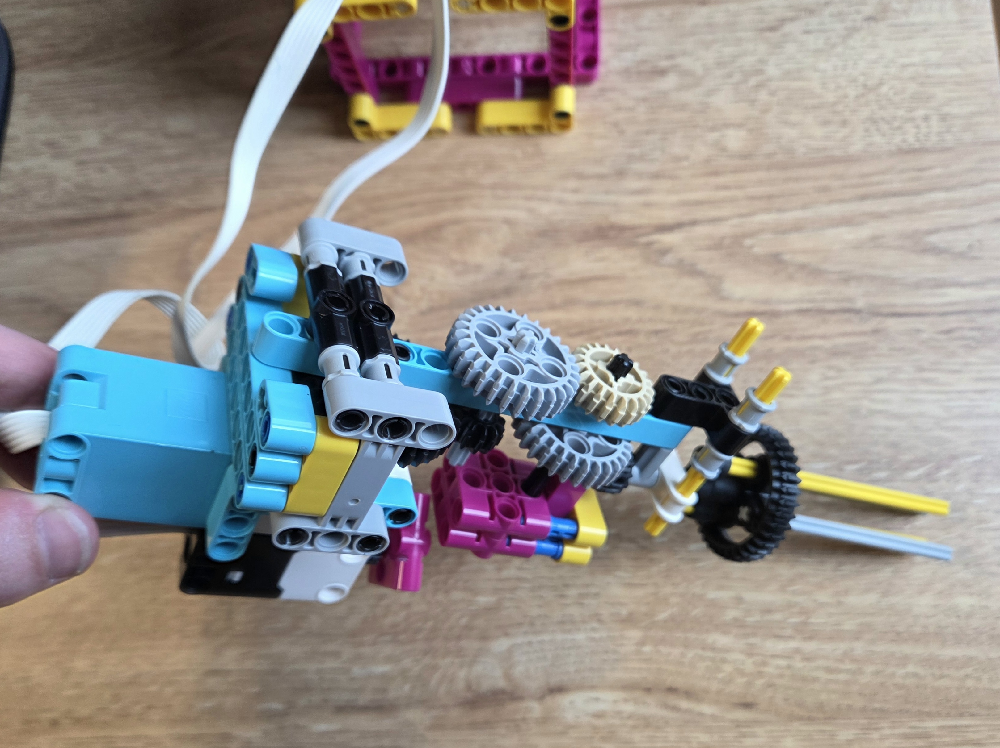
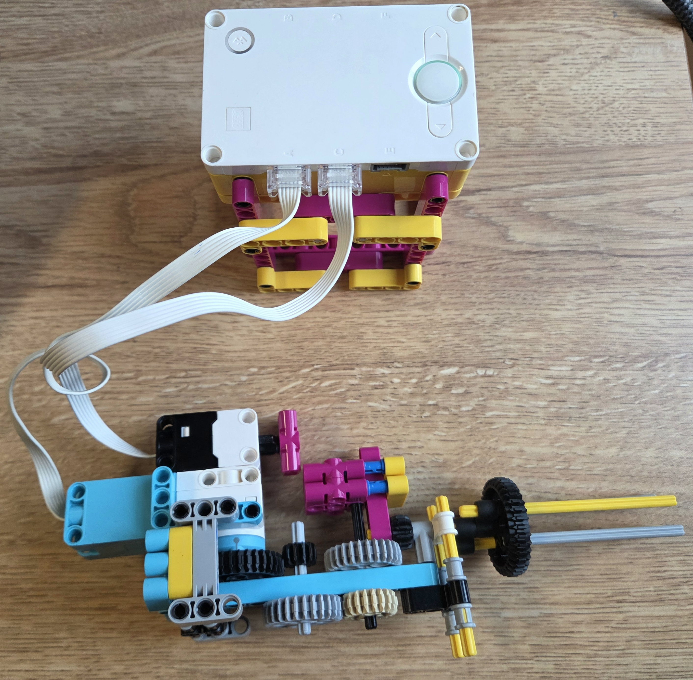
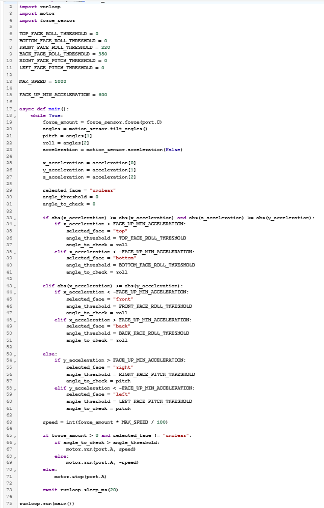

For this project, we designed a tool an astronaut could use to move a nut from one bolt to another. The tool had to unscrew the nut, hold it, and screw it onto another bolt. We took a human factors approach and aimed to make the tool versatile: usable one-handed with either hand, operable while wearing ski gloves like a space suit, as fast as possible, and functional upright, horizontally, and upside down so it would not rely on gravity.
In my initial design, I used four axles held by two gears to grip the nut, and this mechanism worked well. I also used a force sensor to control the tool's speed. In the next iteration, I added one gear to gear down slightly, using a 3:1 gear ratio, and make the tool faster. I also focused on one-handed operation: the hub's IMU changed the motor's direction based on its roll value, so turning my arm and the hub one way or the other would screw or unscrew the nut.
For my final iteration, I redesigned the gears to make the tool much faster, adding a gear train with a 49:5 gear ratio. I found that this speed did not provide enough torque and made the tool harder to control. One of my favorite mechanisms was adding supports so the gear train itself would not spin; these also made the tool more comfortable to hold. I connected the last two gears at a 90-degree angle so the tool pointed in a convenient direction, like a drill.
Finally, I changed the code so the roll threshold for changing motor direction depended on which face of the hub was up and the tool's orientation. Before this change, I had to twist my arm at awkward angles when using the tool horizontally, upright, or upside down.